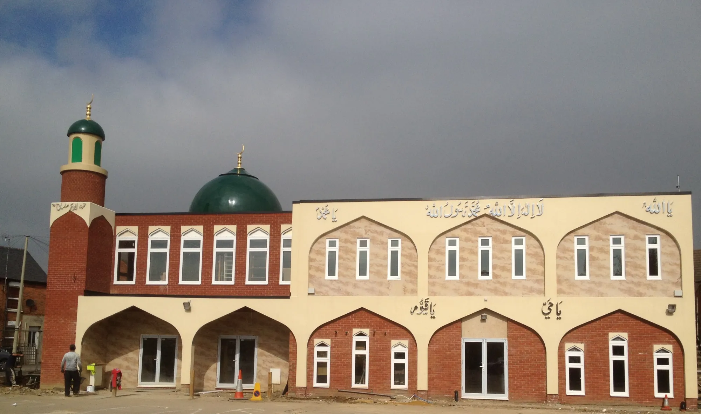
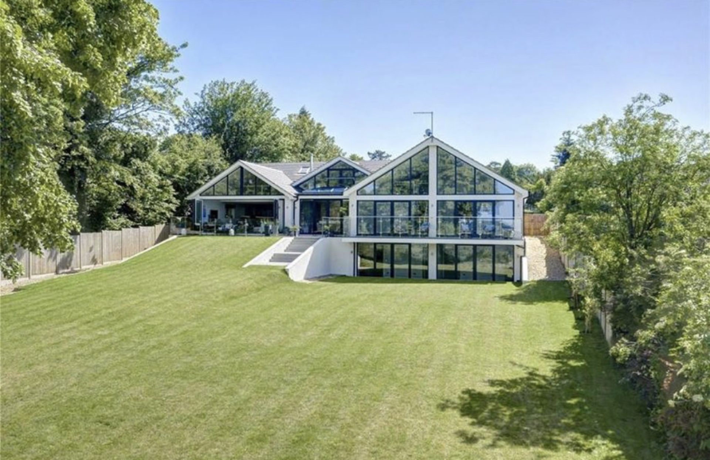
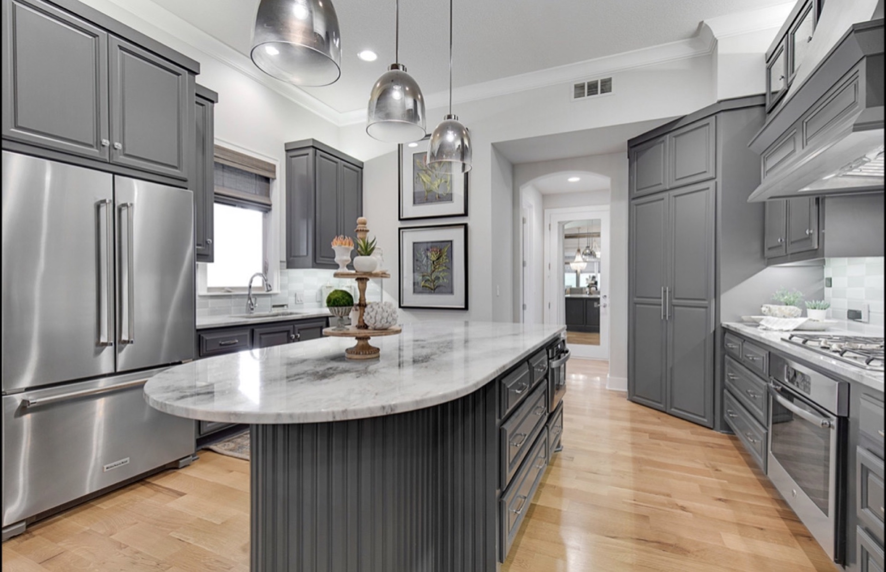
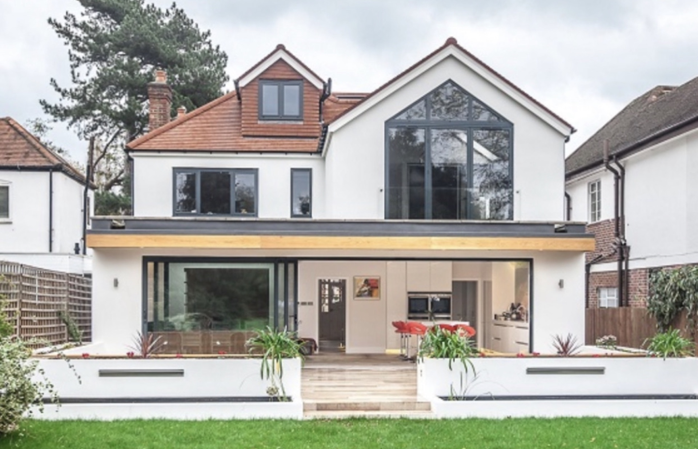

Windsor, Berkshire
From new homes
to major builds.
New builds, extensions and renovations for homeowners. Refurbishments and construction packages for businesses and main contractors.
Discuss your project


Plan a commercial project
Send a tender enquiryFor commercial clients
Bring Civic into your next tender.
We welcome enquiries from facilities teams, property managers and main contractors, whether you have a defined work package or need a site visit to shape the brief.
Invite us to tenderWhat to share with your enquiry
- Scope
- What needs doing and any drawings or specifications.
- Programme
- Tender deadline, target start and handover dates.
- Site
- Postcode, site access, working hours and whether the premises will stay occupied.
- Procurement
- Any onboarding documents, insurance requirements or tender instructions.
Selected work
Project gallery
Swipe through our projects or select a photo to explore the work.

Slough · SL2
Extension & renovation

London · NW1
Residential renovation

Banbury · OX16
New-build place of worship

Maidenhead · SL6
Place of worship extension
Design & build
A home shaped around you
For 20 years, Civic has helped clients build custom homes across South East England and West London. Our architects, builders and design-and-build coordinators bring the drawings, site work and finishing decisions together.

Start with the setting
How should the house sit on its plot? Where would you like daylight, privacy or a view into the garden? These conversations help us plan a home that suits the way you live.

Choose the finish together
Our aim is to balance environmental considerations, a sense of luxury and your budget. Tell us which materials, fittings and details matter most to you.

Keep the build coordinated
Our management team oversees domestic and commercial work, from loft conversions to new builds. Your coordinator keeps you informed as the work progresses.
Free property assessment
Talk through your project
Tell us what you want to change, what you hope to spend and when the space needs to be ready. Our team will discuss your priorities, answer your questions and talk through the next steps for a quote.
Request a free assessment ↗020 7101 3581